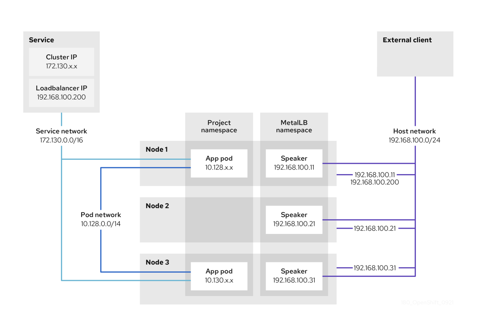
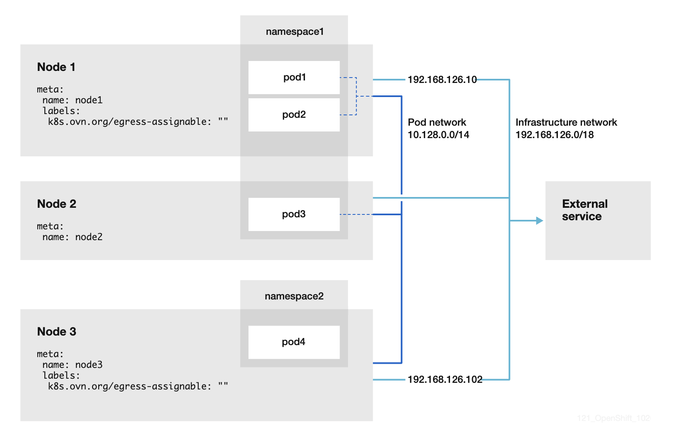

Creating Routes on NCP (Egress and Backward Routes)¶
This guide explains how to configure routes for egress and ingress requirements using NNCP.
Before Implementation¶
-
Changes involving MetalLB, IPAddressPool, backward routes, default egress routes, EgressIP configuration, and MetalLB loopback route modifications must be reviewed and agreed upon collaboratively by the solution architect, network architect, and cloud architect.
-
On the Nokia side, design documents such as IPCIQ, IPLLD, or DNP must be updated by their respective owners.
-
Based on the updated Nokia documents, the cloud architect should update the Cloud NCP LLD to reflect all new changes.
-
Once the above steps are complete, the MACD engineer can accept the ticket and review the LLD to fully understand the requirements.
-
Validate in the system whether the change has already been implemented to avoid duplicate route creation.
-
After all validations are completed, proceed with the implementation.
-
Most important point here is all change need to created via manifest file and updated respective PGT. push everything on git and sync argocd. at last push this config via CGU. (done via ZTP only).
Route Creation Overview¶
All static routes are created on the gateway (GW) nodes to handle both:
-
Ingress (backward routes): for incoming traffic
-
Egress (default egress routes): for outgoing traffic
Ingress¶
Ingress traffic is managed through MetalLB. Applications expose services with a LoadBalancer IP, which must be part of the MetalLB
configuration (IPAddressPool).
- MetalLB configuration is located at:
CWL-Cluster/site-policies/sites/hub/source-crs/metallb
Ingress Explanation¶
1) MetalLB speaker pods advertise the application LoadBalancer IP to BGP peers.
2) BGP peers (on the switches) receive traffic destined for that IP.
3) The traffic is routed to the MetalLB speaker pod.
4) From there, Kubernetes iptables forwards it to the internal service cluster IP.
5) Finally, traffic is directed to the appropriate application pod endpoint.
Since speaker pods run on GW nodes, the GW nodes must have routes to external client systems via the MetalLB VLAN interface (BGP subnet).
In OCP, these ingress routes are called backward routes and are defined under:
CWL-Cluster/site-policies/sites/hub/source-crs/nmstate
Ingress Diagram¶

Ingress Config Example¶
Ingress IPAddresspool Config¶
apiVersion: metallb.io/v1beta1
kind: IPAddressPool
metadata:
name: ncp-metallb-oam-pa-pa-addresspool
namespace: metallb-system
spec:
addresses:
- 10.89.101.128/27
- 10.89.97.208/28
- 10.89.99.192/27
autoAssign: false
avoidBuggyIPs: false
Ingress backward's route config¶
apiVersion: nmstate.io/v1
kind: NodeNetworkConfigurationPolicy
metadata:
name: backward-route-for-oam-pa-pa-metallb-vlan104
spec:
desiredState:
routes:
config:
- destination: 10.89.100.66/32
metric: 150
next-hop-address: 10.89.97.161
next-hop-interface: vlan104
table-id: 254
- destination: 10.89.136.0/24
metric: 150
next-hop-address: 10.89.97.161
next-hop-interface: vlan104
table-id: 254
- destination: 100.64.10.3/32
metric: 150
next-hop-address: 10.89.97.162
next-hop-interface: vlan104
table-id: 254
- destination: 100.64.10.4/32
metric: 150
next-hop-address: 10.89.97.163
next-hop-interface: vlan104
table-id: 254
nodeSelector:
node-role.kubernetes.io/gateway: ""
Egress¶
Egress is needed when application pods communicate with external systems (e.g., NetAct, SFTP servers, or log servers).
Egress configuration has two components:
1) EgressIP configuration for the application namespace:
CWL-Cluster/site-policies/sites/hub/source-crs/egressip/egressip.yaml
2) Default egress route configuration (created via NNCP):
CWL-Cluster/site-policies/sites/hub/source-crs/egressip/default_route_for_egress.yaml
Egress Explanation¶
1) Application pods send traffic destined for external systems (e.g., NetAct, SFTP).
2) Kubernetes routes this traffic through the EgressIP assigned to the namespace.
3) The egress traffic exits via the GW node where the EgressIP is active.
4) On the GW node, the default egress route (NNCP) ensures that traffic is forwarded to the correct external next-hop. but this default route will be with metric as 999. which is low priorty for worste case. so you need to create additional site specific route with metric as 150.
5) From there, the external network routes the traffic to the target system (e.g., NetAct/SFTP server).
6) Return traffic comes back via the same GW node using the EgressIP, maintaining session consistency.
This ensures controlled, predictable outbound traffic from applications to external systems.
Egress Diagram¶
it's just an example: in our infra, host should be a gateway node and network should be application external network which is metallb bgp network.

Egress Config Example¶
Egress default route¶
apiVersion: nmstate.io/v1
kind: NodeNetworkConfigurationPolicy
metadata:
name: egress-default-route
spec:
desiredState:
routes:
config:
- destination: 0.0.0.0/0
metric: 999
next-hop-address: 10.89.97.161
next-hop-interface: vlan104
table-id: 254
- destination: 10.89.27.4/32
metric: 150
next-hop-address: 10.89.97.161
next-hop-interface: vlan104
table-id: 254
nodeSelector:
node-role.kubernetes.io/gateway: ""
Egress IP configuration¶
apiVersion: k8s.ovn.org/v1
kind: EgressIP
metadata:
name: egress-ncd01pan-oam-snat
spec:
egressIPs:
- 10.89.97.172
namespaceSelector:
matchLabels:
kubernetes.io/metadata.name: paclypancd01
With these configurations, ingress (backward routes) and egress routes are consistently managed across OCP deployments.
Implementation¶
below example is showed with label. but you validate your changes accordingly. meaning, if route check route on desired nodes.
Prepare the configuration¶
- Prepare the config file as described above.
Push Policy to Git¶
1) use the git commands to commitn and push it.
cd ~/ncpcwltri04nac/
git add .
git commit -m "Adding a labels"
git push
Apply the policies now using cgu¶
1) Verify Policies Rendered
oc get policy -A | grep label
Example output:
ztp-policies ztp-policies.ncpcwltri04nac-labels inform NonCompliant 21s
ztp-policies ncpcwltri04nac-label-nodes inform NonCompliant 21s
Note: It might take some time for GitOps to sync with the latest changes in Git.\ You can expedite this by using the Refresh option in the ArgoCD GUI for the policies app.
2) Create ClusterGroupUpgrade (CGU)
Before applying the policy, check the current labels of node ncpcwltri04nac:
oc get nodes --show-labels --kubeconfig ~/ncpcwltri04nac-kubeconfig
Also check existing CGUs:
oc get cgu -A
Now, apply the new CGU:
cat << EOF | oc apply -f -
apiVersion: ran.openshift.io/v1alpha1
kind: ClusterGroupUpgrade
metadata:
name: ncpcwltri04nac-labels-config-policies
namespace: ztp-policies
spec:
managedPolicies:
- ncpcwltri04nac-labels-config-policies
backup: false
clusters:
- ncpcwltri04nac
enable: true
preCaching: false
preCachingConfigRef: {}
remediationStrategy:
maxConcurrency: 1
timeout: 240
EOF
Verify the CGU:
oc get cgu -A | grep ncpcwltri04nac
3) Check Policy Status
oc get policy -A | grep label
Example output during enforcement:
ncpcwltri04nac ztp-policies.ncpcwltri04nac-day2-ncpcwltri04nac-label-nodes-68ffc enforce Compliant 13s
ncpcwltri04nac ztp-policies.ncpcwltri04nac-label-nodes inform NonCompliant 11m
ztp-policies ncpcwltri04nac-labels-config-policies enforce nonCompliant 13s
ztp-policies ncpcwltri04nac-label-nodes inform NonCompliant 11m
After a few minutes, policies should reach Compliant status:
ncpcwltri04nac ztp-policies.ncpcwltri04nac-day2-ncpcwltri04nac-label-nodes-68ffc enforce Compliant 33s
ncpcwltri04nac ztp-policies.ncpcwltri04nac-label-nodes inform Compliant 11m
ztp-policies ncpcwltri04nac-labels-config-policies inform Compliant 33s
ztp-policies ncpcwltri04nac-label-nodes inform Compliant 11m
4) Verify Node Labels
oc get nodes --show-labels --kubeconfig
You should now see the new label applied:
is_cmm_fds=true
5) CGU Cleanup
After a few minutes, enforced policies will also be deleted.\ Check CGU status after successful compliance:
oc get cgu -A | grep label
Example:
ztp-policies ncpcwltri04nac-labels 40m Completed All clusters are compliant with all the managed policies